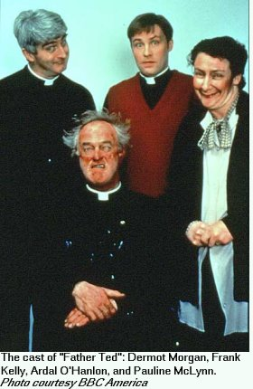

| Father Ted | |
|
 What It's About Father Ted is a comedy about three nearly-defrocked Irish Catholic priests living on remote Craggy Island. The late Dermot Morgan is the title character, who has been sent to the parish because of certain questionable activities with church funds (which he maintains were "just resting" in his account whenever the unfortunate matter comes up). Joining him is junior priest Father Dougal (Ardal O'Hanlon), a very dim lad who doesn't quite seem to understand what Catholicism is really about. And finally, Father Jack, a cranky old priest who sits in his chair shouting out "Girls! Drink! Arse! Feck!" Their housekeeper Mrs. Doyle (Pauline McLynn) has a tea fetish and a weakness for young men in jumpers. The four of them get into bizarre and hilarious situations each episode as they interact with the other strange residents of Craggy Island. Who Will Enjoy It Most likely, fans of shows like Keeping Up Appearances or As Time Goes By (both mainstream BBC shows) won't be very impressed with Father Ted. It was aimed at a younger audience, one who could appreciate its irreverence, and have a sense of humor about religion. Fans of Red Dwarf and Absolutely Fabulous should give Father Ted a chance, with its quirky characters and off-beat situations. What's So Unique About This Series? Father Ted, in addition to winning many comedy awards during its three seasons (and a 1996 Christmas special), was the first series ever purchased by BBC America that was not made by the BBC. It was a Channel Four series in the UK, a commercial arts-oriented channel, where it was a huge success. The CBC in Canada showed the series in 1999 (and it's available on home video in Canada), and now it is coming to various PBS stations around the U.S. So check it out!
| |